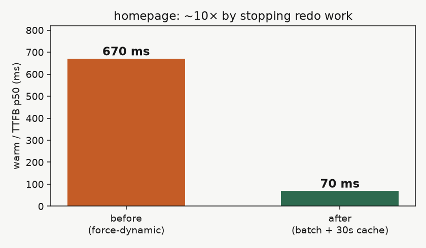
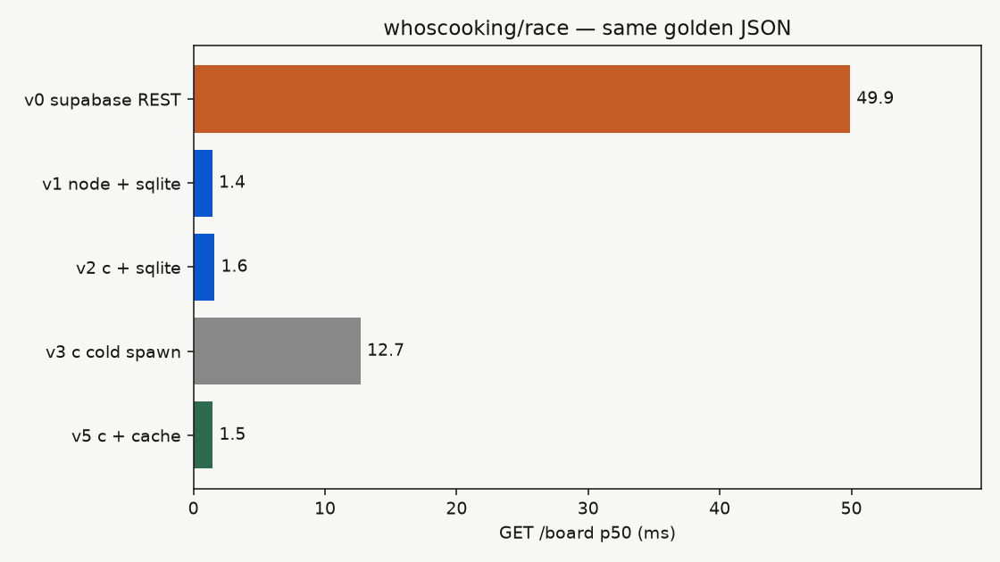
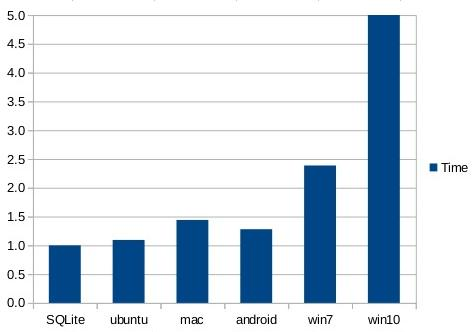

why is software slow?
there are some constants when it comes to the speed of software, mostly determined by hardware and simple physics, speed of light, clock speed, i/o speed, etc.
still, we can make better decisions in code and infrastructure that mean we simply pay those constant costs less times.
instructions and memory
everyone should understand the basic unit of computer execution, the instruction.
an instruction does a simple operation like load or store a value from memory, do arithmetic on loaded values, make system calls, etc. this is as close as we programmers go to the transistor.

instruction speed can vary, we measure in clock cycles, depending on memory access, the instruction itself, scheduling, a single instruction can take a few clock cycles to a few hundred. still nanoseconds.
any program you write must either be compiled into ready to use instructions or it uses an interpreter to translate as it runs.
in different programming languages, code will turn into different instructions with varying complexity.


all python values are heap objects with ids and types, reached through multiple levels of pointers and checks.
compare to c where values are binary numbers in memory. python hides this complexity for us at a cost.
the network
once you leave your own process, you enter the network. packets go through your kernel, your nic, switches, routers, fiber optic cables, another computer's stack, then back again.
light in fiber optic cables goes 200 km per millisecond. a round trips across regions are measured in milliseconds.

an L1 cache hit is sub-nanosecond. a packet from china to europe is 150 milliseconds.
input/output
io is when your program asks the kernel to do something. the process may or may not need to wait for it.

in the browser you can see this idea present, we must wait on the previous thing whether we need it or not.

good io shape looks like less round trips. batch reads, overlap waits, work with what you've got first.
algorithms
this is the part we have the most control of. the algorithms we write determine how often we need to pay fixed costs as input grows.
algorithms should try to avoid doing work twice, swap expensive operations for cheap aproximations, and generally try to do the minimum ammount of work.

why is software slow?
- software does too much unnecessary work.
- software does expensive work it doesn't have to.
- software spends too much time waiting.
whoscooking.live case study

whoscooking.live is a simple service that counts lines of code per user per day.
benchmarks
despite the seeming simplicity, whoscooking is profoundly slow...
warm TTFB p50 from production iad1:
| page | TTFB | |
|---|---|---|
/ | leaderboard & badges. fed by multiple rows | 671 ms |
/records | all time records. contents of one table | 197 ms |
/docs | docs. static page | 87 ms |
follow one GET /
diagram WIP: compare styles on viz-options.
homepage data path, instrumented as /api/trace?mode=full so the same board and badge work runs without the HTML shell:
const board = await getDailyLeaderboard() const badges = await getLeaderboardBadgePinsByGithubIds(...)
machines on this capture (warm, 2026-10-26T17:28:04Z):
- client: WSL laptop, curl measuring
time_namelookup,time_connect,time_starttransfer,time_total - app: Next.js on
127.0.0.1:3000(Node). our TypeScript inlib/leaderboard.tsandlib/userBadges.ts, wrapped bylib/traceFetch.ts - database path: app HTTPS to cloud Supabase PostgREST, then Postgres. not local
client to app on this run is loopback (no TLS). client to production Vercel would add DNS+TCP+TLS and edge admit; those are not in this SVG. function bars are aligned so the function wall ends at client TTFB. each Supabase bar is wait (headers: network + PostgREST/Postgres) then body (bytes into Node). gray wait is the measured floor (min wait across calls, 31.73 ms); pink is wait above that floor.
data/trace-one-request.json.
capture: node scripts/trace-one-request.mjs in whoscooking.
SVG: python3 scripts/build-request-timeline-svg.py here.
hover bars for method, path, and ms.
layer totals from that capture:
| layer | machine | code / stack | ms | notes |
|---|---|---|---|---|
| client connect | laptop | OS network | 0.19 | DNS+TCP (no TLS; loopback) |
| client TTFB | laptop to app | curl | 448.91 | first response byte |
| client download | laptop | curl | 0.49 | 5229 body bytes |
| host overhead | app host | runtime / return path | 26.57 | estimated: TTFB minus function |
| function | app host Node | our route handler | 422.34 | measured with performance.now() |
| board phase | app host | getDailyLeaderboard | 174.44 | 4 HTTP calls (some parallel) |
| badges phase | app host | getLeaderboardBadgePinsByGithubIds | 247.77 | 7 HTTP calls; starts after board |
| app CPU | app host | our TS between awaits | 95.69 | function minus supabase wall |
| supabase wall | app to Supabase | PostgREST + Postgres | 326.65 | merged busy time of 11 calls |
| supabase wait sum | Supabase path | 11 fetches | 592.66 | sum of waits; exceeds wall when parallel |
| supabase body sum | app host | JSON into Node | 28.24 | sum of body reads |
| min supabase wait | Supabase path | cheapest call | 31.73 | wait floor drawn on each span |
what we found
- too many trips
- load the board, then for badge pins fetch history per user, then fetch boards for a pile of dates. N+1 with extra steps. network times N.
- no cache
force-dynamic. every request rebuilt the board from scratch.x-vercel-cache: MISSon every warm sample.- too much cloud
- Vercel serverless plus Supabase REST in front of Postgres, for a leaderboard that would fit in a file.
sort by wall clock. fix in that order. rules for the rest:
1. change one thing 2. deploy it 3. bench the same way as before 4. look at the number 5. keep the win, do the next one
we do not rewrite the whole thing in C yet. if you start there, you never learn which problem was actually expensive.
fix 1: stop calling Supabase in a loop
the badge path was doing one history fetch per user on the board. with fifty people that is ugly. even with five it is silly.
so we batch. one (or a few) .in(github_id, ...) queries instead of one per user. we also Promise.all the board pieces that do not depend on each other.
still Next. still Vercel. still Supabase. just fewer trips, and less waiting in a line.
shipped. the uncached path gets cheaper. warm hits still rebuild everything until the next fix.
fix 2: remember the answer for a bit
a public leaderboard does not need to be rebuilt on every request. if it is thirty seconds behind a webhook, nobody cares.
so we put a 30s cache on the board data and stopped forcing the page dynamic.

/ p50: 671 ms → 70 ms. measured on production after batch + cache.
race/results/summary.json
about 10x on warm TTFB. most of that is "stop doing the work twice." regenerations still show up in p95. that is honest.
today a warm hit often comes back as x-vercel-cache: STALE or a short age header instead of a full rebuild. that is the point.
fix 3: stop talking to our own DB over HTTP
Supabase is nice. dashboards, auth, hosted Postgres. for the public board read path though, we are the only client. we do not really need PostgREST in the middle.
the race harness answers one question: same GET /board, same golden JSON, how expensive is the wire?

whoscooking/race/ - laptop numbers, Oct 20 2026.
REST ~50 ms. local sqlite ~1.4 ms. C in the same ballpark as Node once the network is gone.

not production yet. the live site still goes through Supabase. deploy a direct read path, then put that number here.
fix 4: stop paying for serverless we do not use
who's cooking is not black friday. traffic is a trickle. renting request-scoped compute is convenient, but it is also a tax.
from the same race: spawning the tiny C server and waiting for the first byte is about 13 ms (v3 cold). once it is already up, the same request is about 1.6 ms. that is the cold start story without the marketing.
also not "left Vercel" yet. same rule: deploy, then put the number on the slide.
then, and only then: rewrite it in C
once the network nonsense and the redo-work are gone, we can ask a more honest question: does the language matter?
look back at the race chart. C does not beat Node on nine rows. after you delete the network and the repeated work, the language is mostly noise.
that is kind of the whole point of waiting until the end to do the C rewrite.
so where did the time go?
software is slow when it does unnecessary work, expensive work it does not need, or waits too much.
who's cooking had all of those. we fixed the fan-out and the cache on the real site and got about 10x. the rest is still in progress: get off PostgREST for reads, get off serverless, then play with C.
do not start with the language. start with the stopwatch.
running order
| section | time |
|---|---|
| why software is slow (instructions, network, algorithms, io) | 10 min |
| bench + trace who's cooking | 8 min |
| fix 1 and 2 (batch, cache) with live numbers | 6 min |
| fix 3 and 4 (REST, serverless) once deployed | 8 min |
| C rewrite scoreboard | 6 min |
| close | 2 min |
homework before we present
- done
- baseline benches, the trace story, batch + cache on prod, local race with C numbers
- todo
- deploy a read path that is not PostgREST and bench it in public
- todo
- deploy a persistent board process and bench cold vs warm
- todo
- put those deploy numbers on fix 3 and 4 instead of only the laptop race
thanks
questions: Ralport2005@gmail.com
- whoscooking.live
whoscooking/race/- high performance web servers